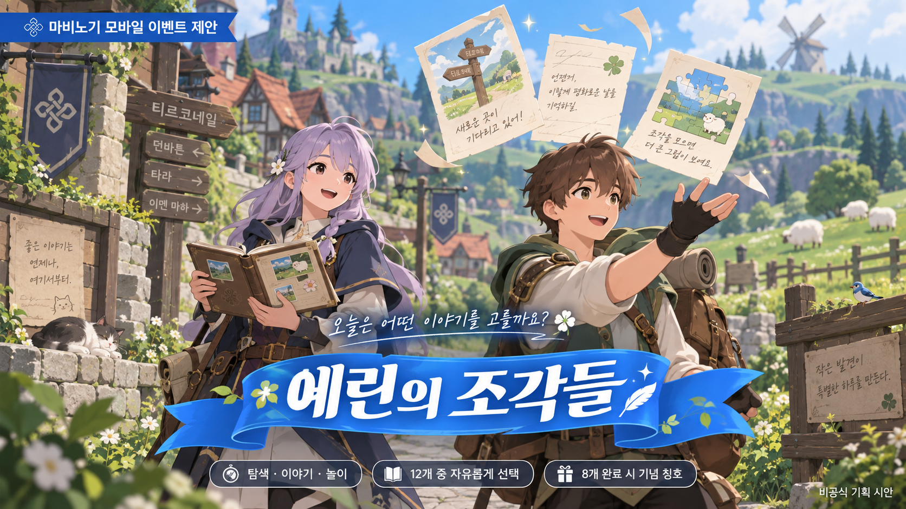
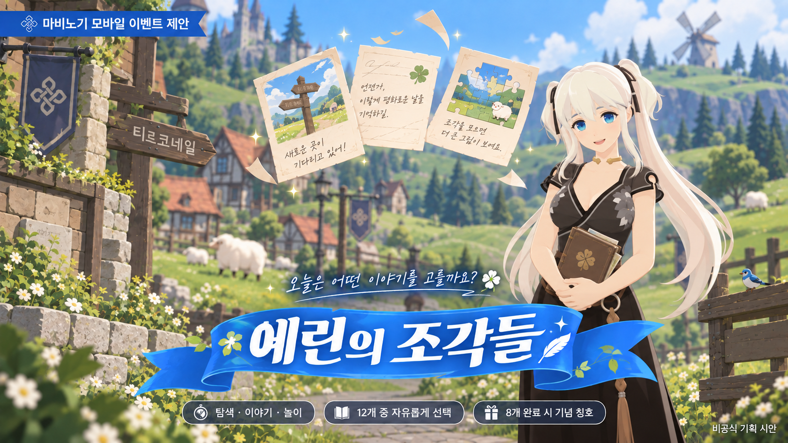

C# & Unity Engine
GameState 상태 전환, 정적 데이터와 런타임 데이터 분리, Addressables 기반 NPC 조립을 구현했습니다.
관련 구현·분석 기록 →Unity와 C#으로 게임의 규칙과 흐름을 구현합니다. 기본기를 다지며 팀과 함께 확장 가능한 구조를 고민하고, 구현 과정과 데이터를 근거로 소통하는 개발자가 되고 싶습니다.
컴퓨터소프트웨어공학부 게임콘텐츠전공
전문학사 졸업예정 · 3학년 · 학점 4.5 / 4.5
복무 만료
BBA · 2학년 중퇴
진학 전 어학연수 · 2018.11 ~ 2019.02
게임개발과 졸업
학교기업 VR 봉오동 전투 · 전쟁기념관 전시·도쿄게임쇼 시연
레이존 주니어 개발자 · 2018.12 ~ 2019.01
유한대학교
SQLD · 2024.12.13 취득 / GameAIfy AI 기술상 · 2025.09.15
GameState 상태 전환, 정적 데이터와 런타임 데이터 분리, Addressables 기반 NPC 조립을 구현했습니다.
관련 구현·분석 기록 →4계층 매니저 구조에서 UniTask로 카메라·시간·입력 순서를 제어하고 Action·event로 UI 갱신 경계를 나눴습니다.
관련 구현·분석 기록 →C# .NET TCP 서버와 공용 프로토콜을 분리하고, 길이 프리픽스 프레이밍과 송신 직렬화를 구현했습니다.
관련 구현·분석 기록 →플레이 지표의 행·열 구조와 수집 기준을 정하고 CSV·Excel 자료를 비교 분석했습니다. SQLD를 취득했습니다.
관련 구현·분석 기록 →손님의 증상에 맞는 약을 처방하고 하루의 영업을 운영하는 1인칭 약국 경영 게임입니다.
7단계 곡물 가공과 운반 대기열, 강화·도감 수집을 연결한 2D 방치형 게임입니다. GameAIfy AI 기술상을 수상했습니다.
4단 피라미드 보드의 고저차와 동시 행동 규칙을 설계하고 플레이테스트로 다듬은 4인 보드게임입니다.
Unity 클라이언트·공용 프로토콜·C# TCP 서버를 분리하고 서버가 로비 상태를 판정하는 멀티플레이 캡스톤입니다.
개발·기획·분석 프로젝트 10개와 수업 과제 컬렉션을 정리했습니다.


개발·기획·분석 프로젝트 · 팀장 · 기획·문서화
가정 데이터와 3,000만 원 예산 조건 아래 보스 분기·보상 테이블·QA 항목을 설계한 제안입니다.
개발·기획·분석 프로젝트 · 팀장 · 로깅 모델·분석
14일간 4개 계층의 지표를 기록하고 표시 전투력과 실제 데미지의 차이를 비교한 QA·밸런스 분석입니다.